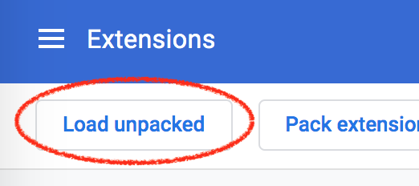

Nagfree is een extensie voor Chrome (uitsluitend desktop / laptop) waardoor websites minder irritant zijn.
Uitleg
Er zitten zo'n 35 scriptjes in mijn extensie. Dit zijn een paar highlights:
- Alle cookies op NPO-sites worden automatisch geweigerd.
- Die stressbannertjes op Booking.com dat je ECHT NU een hotel moet boeken verdwijnen.
- Die lange stukken op groene.nl krijgen een leestijd.
Het is allemaal niet perfect. Sites veranderen nog wel eens, en dan zijn mijn scriptjes ook stuk. En ik heb het niet uitgebreid getest, dus het zou goed kunnen dat het bij jou niet werkt. Het is echt een soort van eerste versie.
Maar het is in ieder geval íets waardoor je het gevoel krijgt dat het internet minder stuk is. En dat je het een beetje hebt gerepareerd.
Installatie
- Download de extensie en unzip het bestand. Als je een beetje handig bent met Git kun je ook de repo clonen
- Ga naar je Chrome extensies.
- Zet 'developer mode' aan (knopje aan de rechterkant).
- Klik op het 'Load unpacked' knopje en selecteer het mapje waar je het Nagfree zipje uit hebt gepakt. 
- Ga naar whitehouse.gov. Als het lettertype Comic Sans is werkt de extensie. Gefeliciteerd!